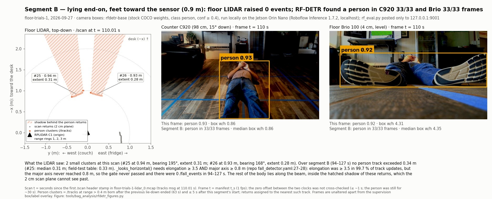

Fall detection at the edge, privacy first.
A 2D LIDAR on the floor finds a person lying down from geometry alone. In an offline evaluation of two webcams with a detector running on the device, the counter webcam saw both end-on poses that a single scan plane misses, in every frame. The LIDAR detector runs live on a Jetson Orin Nano in the room. So far it has been measured on one subject in one room.
- The LIDAR sees distances, not images. A person lying across its beam is a long, thin cluster of points about 2 cm above the floor.
- Camera inference was evaluated offline. Inference ran on the Jetson, and the client posted frames only to localhost. What the server itself sends was then captured against bars declared in advance. The first capture failed; what it found, what was switched off and what still leaves are in Evidence, section 8.
- Detection today; prediction is the next goal. Nothing here predicts falls yet. It is not a medical device, and it is not cleared by any regulator.
One subject, one room, one session: feasibility results, not recall estimates.
Schematic, not live data. Top-down view, sensor at the bottom. Drawn from the floor trials of 2026-09-27 (segments A and B).
In the U.S., falls are the leading cause of injury death among adults 65 and older.
Part of the harm comes after the fall: a person who cannot get up and is not found. A detector in a resident’s room has to notice someone on the floor while keeping images of them in the room. The LIDAR uses no images. The webcams added for its blind spot were tested with a detector on the device, and what that server sends off the device has been captured: in one captured run (one model, cameras off, no model download) the frames stayed on the device, and an aggregated usage record still leaves (Evidence, section 8).
What the prototype is testing
The target setting is senior-care rooms. No result comes from one yet.
- See a person lying down without images. A 2D LIDAR sees shapes, not faces. A person standing is a small slice of points; a person on the floor is a long, thin one.
- Cover what one scan plane cannot see. Lying end-on to the beam hides the body. Two webcams with a stock detector are evaluated for exactly those poses.
- Keep frames in the room. A hosted inference API was rejected because frames would leave the room (DR-11). Four network captures then checked what the on-device server sends. The first found a leak, now switched off; one usage record still leaves, by decision. The captures and their limits are in Evidence, section 8.
- Don’t raise false alarms. There were 0 in 95 s of walking so far. At floor level, furniture feet look like a lying person, which makes them the main false-alarm risk.
What runs, what was tested offline, and what is still open.
The LIDAR path runs live on the Jetson. The camera path has been measured on the same device, outside the alert path. Fusion is not built, and the verification stage is proprietary.
LIDAR path: from distances to fall events
RPLIDAR C1
2D, 10 Hz, on the floor. The scan plane is about 2 cm up.
Background model
A rolling median, plus a hold so that a still person is not absorbed into the background.
Clustering
DBSCAN, with a PCA shape for each cluster: its extent and how elongated it is.
Tracker
Nearest-centroid association from scan to scan.
Fall heuristic
Elongated and person-sized. Either a speed spike and then stillness, or down for a sustained time.
/fall_eventsOBSERVE and WARN, with a confidence.
min_range_m is raised from 0.05 to 0.3 at the flip. The Jetson still runs the legacy detector until pre-declared replay bars are met.Camera path: for the LIDAR’s blind spot
Two webcams
Logitech C920 on the counter (98 cm, 15° down). Logitech Brio 100 on the floor (4 cm, level).
Recorded in bags
1280×720 at 30 Hz, recorded alongside the LIDAR in rosbag2 bags. The 09-27 camera record is the original sqlite3 bag; bags are recorded as mcap from now on (DR-16).
Frames extracted
1 frame per second, for evaluation only.
Stock RF-DETR
COCO weights, no fine-tuning. Served by Roboflow Inference 1.7.2 on the Jetson, listening on 127.0.0.1:9001 only.
D1: boxes, keypoints, or a pose class
Box shape failed (C3). A fine-tune that predicts the pose as a class passed on public data (
D1 openlying1.000 / 1.000 on a 73-image public test split; one training run, near-duplicate frames not checked, so an upper bound). On recorded room frames the device-sized model then passed both pre-declared bars from the counter camera, and the floor camera read one pose as standing (section 9). The keypoint rescore plan is written and has not been run.
Downstream: where evidence is combined and confirmed
LIDAR WARN + camera detections
These are the inputs. Combining them needs the LIDAR-to-camera extrinsics, which are not measured yet.
Fusion
Where it runs is an open decision, and nothing is built. The camera half exists as a time-on-floor Roboflow Workflow (seconds since a down-pose track entered a floor zone). It is validated structurally and ran once on the hosted API on one public image, which shows only that it executes. It has not been run on video.
D0 open
LIDAR WARN
In the system design, a WARN escalates to verification.
V-JEPA verification stage
Proprietary and not public. Shown only as a black box, and nothing here measures it.
ProprietaryALERT · CRITICAL
Defined, but never emitted in this repository.
Alert levels in the FallEvent message. This repository emits only levels 1 and 2.
Field results, including what failed.
The documents that report every number are linked at the end of this section. Each room result is one subject, one room, one session. Frames within a segment are near-duplicates, so these are feasibility results, not recall estimates.
1. Height decides whether the LIDAR can see a fallen person
A level scan plane above the floor passes over a person lying on it. Moving the sensor down to the floor fixed that for a person lying across or diagonal to the beam, but not end-on.
| Mount | Person on the floor | False alarms |
|---|---|---|
| Original height (09-25) | Invisible: the scan toward the fall spot matched the empty room for 50 s | not measured |
| Lowered (09-25) | Visible (extent 0.8 to 1.3 m), but no WARN: stillness peaked at 0.4 s | not measured |
| Counter, level, 121 cm (09-26) | Lost for 39 s while both cameras kept the person in view | 0 in 165 s |
| Floor, about 2 cm (09-27) | Detected across and diagonal to the beam; missed end-on | 0 in 95 s of walking |
2. Floor trials with the legacy detector (floor-trials-1)
There were six lie-downs and a walking baseline. Lying across or diagonal to the beam was flagged (OBSERVE) within about a second of going down, at every range tried (1.3 to 2.6 m). Lying end-on, the plane saw only 0.22 to 0.33 m of soles or head, and both of those trials were missed.
| Segment | Pose | Cluster length | Events |
|---|---|---|---|
| A | across the beam, 2.0 m | 1.64 m | 350 OBSERVE, from onset to get-up |
| B | end-on, feet toward the sensor, 0.9 m | 0.33 m | none: missed |
| C | across, 2.6 m | 1.62 m | one WARN at 165.3 s (triggered by a jitter-made speed spike, DR-07), then silent for 26 s while the person was still down |
| D | diagonal, 1.6 m | 0.99 m | 347 OBSERVE |
| E | diagonal, 1.3 m | 0.92 m | 335 OBSERVE |
| F | end-on, head toward the sensor, 0.83 m | 0.22 m | none: missed |
| W | standing and walking, 95 s | 0 false alarms |
lie-downs flagged: A, C, D, E, which were across or diagonal. Segment A’s events start at 28.9 s, and the segment starts at 28 s. These are OBSERVE flags, not alarms.
events were OBSERVE. Escalation failed. Stillness never exceeded 3.4 s, although each lie-down was held for about 30 s, and one track went silent after its single WARN.
false alarms in 95 s of walking. In the grid walk, tracking was continuous at all six stations, with zero dropouts and zero fall events.
3. The field recording exposed two escalation bugs. The fixes are tested offline and not yet enabled.
Every fix sits behind a configuration switch that defaults to the legacy behaviour. The replay harness runs the same detector code over the recorded bag on a laptop, without ROS.
| Fix | Evidence (kind) | Record |
|---|---|---|
| Incident hold instead of the one-WARN latch | Replay of floor-trials-1: segment C holds WARN to 193 s, every other segment is unchanged, and the walking baseline has 0 WARN either way. A spurious WARN would be held too. | DR-07 |
| Windowed stillness (0.25 m over 1.5 s) | Unit tests: 12 stillness tests, including a boundary test that fails without the epsilon | DR-09 |
min_range_m 0.3, shipped with it | Replay: without it, the fixed config turns a 6 cm clutter track into a WARN at 24 s, before anyone lies down | DR-09 |
| Per-track time base and speed gate | Unit tests. The motivation was 4.6 m/s of “motion” that turned out to be association jumps between clusters. | DR-08 |
| All of the above behind legacy defaults | Replay: the default config is byte-identical to the incident-hold commit on all 7 bags; legacy goldens pass | DR-06 |
| All of the above, switched on together | Replay of floor-trials-1: WARN 0.7 to 4.0 s after onset in A, C, D and E (3.3 to 6.5 s on stillness alone); 0 events of any level while walking or standing | Results |
4. The blind spot, seen by the cameras
Lying end-on with the feet toward the sensor, a person shows up on a floor-level LIDAR as two small clusters, and the detector raised 0 events. Stock RF-DETR, running on the Jetson, found the person on both cameras.

tools/bag_analysis/rfdetr_figures.py. Source: RF-DETR results, section 4. Open the full-size figure.
5. Stock RF-DETR on the LIDAR’s blind spot: conditions declared before the run
The evaluation plan, with its pass bars, was committed at 16:38 and the results at 17:26 (PDT, 2026-09-27). The run used 580 frames at 1 frame per second, with three model sizes served locally on the Jetson.
| Condition (declared before the run) | nano | base | medium |
|---|---|---|---|
| C1: person in ≥ 90% of B and of F frames, on at least one camera | pass (C920 33/33, 30/30) | pass | pass |
| C2: person in ≥ 90% of walking frames, counter camera | pass 90/90 | pass 90/90 | pass 90/90 |
| C3: box width/height separates lying from standing | FAIL (B, D, E) | FAIL | FAIL |
| C4: cost next to the running LIDAR stack (report only) | 107.9 ms, 9.3 fps | 126.9 ms, 7.9 fps | 126.9 ms, 7.9 fps |
- The counter camera carries F. On the floor Brio, F was 26/30 (nano), 20/30 (base) and 30/30 (medium). B was 33/33 on both cameras.
- The walking boxes show hips and legs only. The counter camera cuts off heads, so C2 passes as a detection, not as a view of a standing person.
- C3 failed for every size. The median box width/height was 0.78 to 0.87 in lying segments B, D and E. The consequence was declared in advance: keypoints next. The first keypoint run was invalid under its own rule and was not scored. A rescore plan (v2) that fixes the class rule was written on 2026-09-28 and has not been run. A fine-tune that predicts the pose as a class is a third option (section 6).
- C4 is a median serial client round trip, with one request in flight and the cameras stopped. It is not a throughput benchmark. The lowest free memory (
MemAvailable) was 2,584 MB. Whether inference disturbs the LIDAR under load was measured once on 2026-09-28, with a fine-tuned model: the scan stream held 10.009 Hz with no gap over 0.5 s while it served 580 frames (one run, cameras off; section 7). - Near-duplicate frames. At 1 frame per second, each segment on each camera is closer to one trial than to thirty.
- On 09-27 the privacy settings were reported, not verified, and one of them did not work. The client posted only to 127.0.0.1:9001, but the server was also posting a record of every request to Roboflow once a minute (by the Inference 1.7.2 code; the capture cannot read TLS), and the opt-out setting in the container command (
TELEMETRY_OPT_OUT) does nothing in Inference 1.7.2. It was found and switched off on 2026-09-28 (PDT), and the switch was verified in one captured run (one model, cameras off, no model download captured); see section 8.
6. A fine-tuned class split, on public data only
Box shape could not separate lying from standing (C3), so a third option for D1 was tested under a plan committed before any training started (2026-09-28, 11:30 PDT): fine-tune RF-DETR to predict the pose as a class. The data is public: three Roboflow Universe datasets, forked unchanged. The architecture search ran on one of them, the primary arm (arm A, 736 images), for 1 h 59 min. Arms B and C were plain RF-DETR nano comparison arms. Every model was trained and scored on Roboflow. No frame from the test room was uploaded, trained on or scored.
| Condition (declared before the run) | Verdict | Bar | Measured |
|---|---|---|---|
F1: lying precision and recall on the primary test split, at the threshold fixed on the valid split (0.75) | pass | ≥ 0.90 each | 1.000 / 1.000 |
F2: lying read as standing or sitting, or the reverse | pass | ≤ 5% of 24 lying | 0 of 24 |
F3: bed and lying confused (report only) | reported | none | 0 either way (16 bed, 24 lying) |
| F4: plain RF-DETR nano on two larger datasets, no architecture search (report only) | reported | none | URFD frames: fall 0.931 / 0.982, 0 swaps in 110. lying3: lying 0.910 / 0.950, 4 swaps in 299 |
- Small and public. 73 test images, 89 instances (24 lying, 11 sitting), one dataset of one author’s rooms. Read the pass as not dead on arrival, not as a recall estimate.
- An upper bound. Nothing checked whether train and test share near-duplicate frames. Each arm has one scored training run, so seed variance is unmeasured (arm B ran twice by accident; the unscored duplicate moved test mAP@50 by 0.006).
- The errors are on the upright side. 4 standing instances were read as sitting and 1 was missed, with 0 false positives.
lyingstays 1.000 / 1.000 at every stored threshold from 0.11 to 0.87. - Two evaluators. The model was picked on the search’s own valid score (96.85 mAP@50-95); every number above is Roboflow Model Evaluation’s (0.963 on the same split). Whether the rule would pick the same model under Model Evaluation is not known, because only two were evaluated.
- How the numbers were read. The 0.75 threshold comes from the valid split and was not tuned on test. Confusion matrices are stored at 0.1 steps only: F2 is read at 0.70 and 0.80, which agree, and the F4 swaps at 0.40.
bedlabels the furniture, so nothing here tests a person lying in a bed. Arm C’s splits were rebalanced to 70/20/10 before versioning, because its fork had 6 test images. - Licences. The datasets are CC BY 4.0 as their Universe uploaders state (the URFD copy was not checked against the original dataset’s terms). The trained models are under Roboflow’s Platform Model License (PML-1.0).
- Not a room result. The room frames were scored under a separate plan (section 9). Source: the fine-tune plan and the results, section 3.
7. On the device: speed, memory, and the LIDAR under load
Later the same day (15:54 PDT), both fine-tuned models were pulled into the local Inference container on the Jetson and sent the 580 room frames of section 5, one request at a time, to 127.0.0.1:9001 only, with the cameras off. Their predictions were discarded by design: reading them would be a room result, which needs its own plan first.
| Model | Input | Median round trip | Serial fps |
|---|---|---|---|
Fine-tuned, the fast child of the search (e65db0) | 288×288 | 78.7 ms | 12.7 |
Fine-tuned, the plan rule’s pick (00ba18) | 640×640 | 125.2 ms | 8.0 |
| Stock nano, measured 2026-09-27 | not read | 107.9 ms | 9.3 |
| Stock base, measured 2026-09-27 | 560×560 | 126.9 ms | 7.9 |
- Against the stock models. The fast child is 27% faster than stock nano, and the rule’s pick costs what stock base and medium cost. The stock numbers are from 2026-09-27, measured the same way.
- Memory and the first call. The lowest free memory (
MemAvailable) with both models resident was 2,799 MB. Only that minimum is usable, and with the cameras off the load of live capture is absent from it. After a restart, a model not yet in the cache pays a download and load on its first call: 17.5 s; with the weights already cached it was 1.8 s. That download has never been captured on the network. - The LIDAR under load, CL1 and CL2. CL1,
/scancount within 10% of idle: 594 against 567 (+4.8%), pass. CL2, no/scangap over 0.5 s while the fast child served 580 frames: 0 (largest 0.105 s), pass. Both recordings read 10.009 Hz; the counts differ by the recorders’ spans. The bars were committed before the recording. - One run of one model on one Jetson, cameras off.
/fall_eventsstayed silent, and nobody was asked to be in the room. Nothing more is claimed about the detector under load. - The speed figures are report only. F5 had no bar. It is a serial measurement with one request in flight, not a throughput benchmark. The LIDAR stack on the Jetson ran the branch
fix/background-absorption, notmain. - Source. Fine-tune results, section 5.
8. What the on-device server sends: four network captures
Running inference on the device (DR-11) keeps frames in the room only if nothing else carries them out. On the afternoon and evening of 2026-09-28 (PDT; the repository dates the last three captures 2026-09-29 UTC), four tcpdump captures on the Jetson tested that, each against bars committed before it ran. TLS was not read: the destinations and sizes come from the captures, and what the bytes contain comes from the Inference 1.7.2 source code.
| Capture | Verdict | Bar (declared before the run) | Measured |
|---|---|---|---|
| 1. A 580-frame run, with the container command as then written | FAIL | EG1: under 200,000 bytes to non-LAN addresses during the 580-frame loop | 285,098 bytes, almost all one 280 KB post to api.roboflow.com. A lower bound: the capture started 34 s late |
2. The same run, with that post switched off (METRICS_ENABLED=False) | pass | EG1 | 12,987 bytes, in exchanges of about 2.4 KB every ~10 s to api.roboflow.com |
3. A container start with no request sent, the version check off (DISABLE_VERSION_CHECK=True) | FAIL | VC1: no GitHub lookup, and no connection from the container to any non-LAN address | No GitHub traffic, but two 0-byte handshakes to 1.1.1.1:80 (the online check of the ultralytics package, by its code) |
4. A container start with no request sent, that check off too (YOLO_OFFLINE=True) | pass | VC1 | No packet from the container to any non-LAN address in 32.6 minutes |
- The second bar of each pair passed. EG2, every non-LAN destination is a Roboflow host, passed in captures 1 and 2. VC2, the server answers within 120 s with the switch under test set, passed in captures 3 and 4: the first answer was seen 100 s after the server process started in capture 3 and 45 s after in capture 4. Both times are counted from that start, not from the container start, and in capture 3 the exact moment of the first answer was not captured.
- What capture 1 found. Until the post was switched off on the evening of 2026-09-28 (PDT), the server posted, once a minute, a record of every request, during every run of 2026-09-27 and 2026-09-28. It sent no frames and no boxes. The opt-out setting in the container command (
TELEMETRY_OPT_OUT=True) does nothing in Inference 1.7.2. The bar was not moved. The capture saw 167 of the 580 frames, so 285,098 is a lower bound; that correction is written beside the result, not over it. - Frames stayed on the device in capture 2. The full 166 MB of frames went to the local container and 13 KB left the device. One run, one model, cameras off. The model was already on the device, so no model download was captured.
- What still leaves. While the server answers requests, about 2.4 KB goes to api.roboflow.com every ~10 s: an aggregated usage record, with no image and no per-detection field. Its fields are listed under Known limitations. Whether that may leave a resident’s room was a product decision: yes, for now (Jeremy Gracey, DR-11). No revisit trigger is set.
- An idle container. A container that is not asked anything sent nothing to any non-LAN address for the 32.6 minutes it was watched. A model download has never been captured.
- Sources. DR-11, the fine-tune results, section 5, and the container command,
jetson/inference-server-up.sh.
9. The fine-tuned model on room frames: one camera passed, one failed a pose
On 2026-09-29 the device-sized fine-tuned model was scored on the 580 recorded room frames of section 5, on the Jetson, at confidence 0.56. It is the faster of the two models in section 7, and not the one that passed F1 and F2 in section 6. The plan, the runner and the scorer were pushed to the public repository before the run. One run, scored once: 580 frames answered, no request error.
| Condition (declared before the run) | Verdict | Bar | Measured |
|---|---|---|---|
R1: one camera reads lying in both end-on lie-downs the LIDAR missed (B and F) | pass | ≥ 80% of B and of F, same camera | counter camera: 32 of 33 and 30 of 30 |
R2: the counter camera reads lying while the person stands and walks | pass | ≤ 5% of 90 | 0 of 90 |
| The floor camera, same segments (report only) | reported | none | B 32 of 33. F 0 of 30: all 30 read standing |
- One camera of two. The floor camera read the head-first lie-down as
standingin 30 of 30 frames, and on its own it would fail R1. In the two diagonal segments it often returned no pose at all (20 of 35 frames and 11 of 33). Why was not examined. - One subject, one room, one lie-down per segment. Frames within a segment are near-duplicates, so each count is closer to one trial than to thirty. Nobody fell. On the counter camera the walking frames show hips and legs only.
- Reviewed before the run. Two adversarial reviews of the plan and its scorer came before any result. The first found two ways a broken run could have been scored as a pass; both were closed before the plan was committed.
- Not verified at the run. The container’s settings were not inspected and the network was not captured, so what section 8 says still leaves is assumed to have left.
- D1 stays open. A passing bar is evidence, not a decision. Source: the room-frame plan and the results.
Run like an experiment, and keep the failures in the record.
Every evaluation is written down before it runs. It is analysed with code that replays the recording, attacked by a separate adversarial audit (run with Claude Code, not an external reviewer), and closed with a decision record.
Pre-declare
The pass bars are committed before any result exists. The RF-DETR plan was committed at 16:38 and its results at 17:26 (PDT). On 2026-09-28 the fine-tune plan preceded its results by 2 h 41 min, and every network capture had its bars committed before it ran.
Field trial
A written runbook, positions measured with a tape and an angle gauge, labels typed per phase (they failed twice and were reconstructed from the camera frames, so the label window is now tested before recording), and a recorded bag.
Replay
The same detector code runs over the bag on a laptop. Goldens and legacy parity checks come first, then the fix.
Adversarial audit
A separate adversarial pass (run with Claude Code, not an external reviewer) re-derives the numbers. Its findings are written next to verdicts that are left unchanged.
Decision record
18 records (DR-00 to DR-17), each with its status, the options on record (or a note that none were written down) and its evidence; the open ones say what comes next.
What the process caught
- C3 failed for every model size. It is reported as a failure, and its consequence was written into the plan before the run.
- The keypoint run failed its own validity check, so nothing was scored and no informal score was substituted.
- The audit found that “frames never leave the device” was wrong as written, because frames were copied to a Mac for scoring. The results were corrected to “the client posted only to localhost”.
- The first network capture failed its pre-declared bar. By the Inference 1.7.2 code (TLS was not read), the server was posting a record of every request once a minute, which the container command as then written did not stop. The bar stayed where it was, and the fix was checked by a second pre-declared capture (one run, one model, cameras off; no model download captured).
- That second capture showed the first had started 34 s late; the correction is written beside the first result, not over it.
- A start-up check failed because its bar was wider than the switch under test. It had caught a second probe, which was switched off and verified by a fourth capture (an idle container, watched for 32.6 minutes).
Governing the tools, including the AI
The code and most of the documents were written with Claude Code as a collaborator. Its authority is limited by structure, not by instructions: a pre-push hook blocks every push unless it is explicitly allowed, and on the Jetson a scoped sudoers rule allows only service control, clocks, a power-mode query and shutdown. Jeremy Gracey ran the hardware, made every decision and owns the results. More in PROCESS.md and DECISIONS.md.
The LIDAR path and its evidence are public.
The detector, the test tools and the field evidence are published under Apache-2.0. The verification stage is not.
Public under Apache-2.0
- LIDAR fall detector (ROS 2 Humble, ROS-free core)
- Replay harness, RF-DETR scorer and figure scripts
- Field-test protocols, results, the audits and 18 decision records
- Tests that run with no ROS and no hardware
- The on-device runners (
jetson/rf_eval.py,jetson/f5_device_fit.py) and the container command with its privacy switches (jetson/inference-server-up.sh) - The fine-tune plan and results, Roboflow’s evaluation extracts and the network-capture summaries (no frames)
- A time-on-floor Roboflow Workflow, the camera half of D0 (not run on video)
Not public
- The V-JEPA verification stage: proprietary and patent pending (there is only an interface stub)
- Raw recordings, extracted frames, model predictions on room frames, and the packet captures
Upstream fix: roboflow/inference#3072
With the documented read-only container command, the JetPack 6.2.0 Inference image returned HTTP 500 for every RF-DETR request. The pull request adds one ENV line that sets TRITON_CACHE_DIR, plus a unit test. With the variable set at runtime, all three RF-DETR sizes returned predictions (the image itself was not rebuilt).
Everything on this list is future work.
Column 1 follows the repository’s roadmap. Column 2 is the founder’s funding ask. The last column is not built.
Close the open items
- Finish spot memory (across a re-spawn) and time-based spike memory, then switch the fixes on, but only against the pre-declared bars (WARN in every lying segment, 0 WARN in every empty-room segment), then deploy with a rollback tag. Until spike memory exists, the spike rule fires mostly on centroid jitter rather than on the fall itself.
- D1: run the keypoint rescore (plan v2, written 2026-09-28), and decide what follows from the room-frame result, the floor camera’s failure included (section 9). Either option needs a counter-camera view that shows the whole body.
- Fusion (D0): measure the chosen placement on the device, recording the LIDAR during the run.
- Privacy, structurally: done for active learning (off in every request), the container environment (versioned), the per-request pingback, the version check and the start-up probe, the last three verified by capture (one run, one model, cameras off; the two start-up switches on an idle container). The aggregated usage record may leave, for now (Jeremy Gracey, DR-11). Left: a capture that covers a model download.
- More evidence: measure the LIDAR-to-camera extrinsics, then run labelled trials with more subjects, ranges and rooms.
- Revisit 3D sensing with those numbers.
Pilots, then prediction
- Supervised pilots at 2 to 3 selected sites, $500K per site (at most $1.5M for three).
- Prediction is the goal: moving from detecting a fall to flagging rising risk before one. It is not built, and the system does not have the technology for it yet; building it is what the raise is for.
- The pilots would be research, with supervision in place. The system stays a research prototype, not a medical device.
Features, not yet designed
- A care-team app (see the UI concept, which uses fictional data)
- EHR integration
- A path toward HIPAA-aligned deployment
- WiFi sensing as a camera-free modality. Nothing here measures it.
Read this before relying on anything above.
Status
- A research prototype, measured on one subject in one room.
- Not a medical device. Not cleared by any regulator. Not to be relied on to detect falls.
- Patent pending. The V-JEPA verification stage is proprietary, and nothing here claims how it performs.
- Apache-2.0 for everything in the public repository.
Known limitations
- End-on blind spot. A single 2D plane cannot see a person lying end-on. The cameras covered it in the trials, but fusion is not built.
- Escalation is legacy. The Jetson runs the legacy detector; the fixes are tested offline only.
- Furniture feet look like a lying person at floor level (elongated and still). They have raised no alarm so far, but they are the main false-alarm risk once stillness works.
- Camera privacy has been checked by capture, and one gap remains. Until 2026-09-28 the server posted a record of every request (class and confidence per detection, API key, hostname, IP, MAC) once a minute; that is switched off and verified by capture (one run, one model, cameras off). An aggregated usage record (API key in clear, hashed hostname and IP, counts; no image, no per-detection field) still leaves every ~10 s while inferring, by Jeremy Gracey’s decision (DR-11), for now. The fields are from the Inference 1.7.2 code, since the captures cannot read TLS. A model download has never been captured.
- The camera views are unauthenticated. Since 2026-09-28 they listen on the loopback address by default and are opened through an ssh tunnel; exposing them to the network is an explicit setting for a trusted bench. The camera topic stays reachable to anyone who can join the ROS domain on the local network.
- The fine-tuned class split’s public numbers are an upper bound. 73 test images from one dataset, one training run, near-duplicate frames not checked. On recorded room frames the device-sized model passed from the counter camera and failed one pose from the floor camera (section 9): one subject, one room, nobody fell.
The name comes from Prevention + Awareness. Prevention is the long-term aim; what exists today is a detection prototype.
Two ways to get involved.
The repository is public, so you can check it before you get in touch.
Collaborate, contribute, or join
For engineers and researchers in sensing, computer vision, ROS or care settings:
- Run the tests. They need no ROS and no hardware.
- Open an issue or a pull request against the decisions that are still open (D0, D1).
- Hiring conversations are welcome.
Fund supervised pilots, then prediction
The ask is $500K per site for supervised pilots at 2 to 3 selected sites, at most $1.5M for three. The pilots are also where the prediction work starts; prediction is not built yet. This is the founder’s ask, not a measured result or a projection.
The pilots would run under supervision. The system stays a research prototype, not a medical device.
Jeremy Gracey, MS · jeremy.a.gracey@gmail.com · GitHub
App UI concept
This is a clickable mock of a possible staff app. Apart from the author’s own name on the Profile screen, every resident, staff member, alert, score and number in it is invented. It is not connected to the detector. None of the features it shows are implemented; the risk scores and gait trends are the kind of output the prediction work aims at:
Shown in the concept, not implemented
The concept page loads React, ReactDOM and Babel from unpkg.com, at pinned versions with integrity hashes.
Open the UI concept (fictional data)